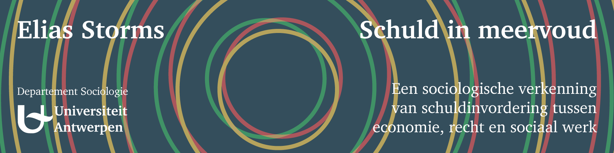

Schuld in Meervoud
Een sociologische verkenning van schuldinvordering tussen economie, recht en sociaal werk

Download het proefschrift als PDF .
In 2020 vervolledigde ik mijn doctoraatsonderzoek: een sociologische analyse van schuldinvordering ten aanzien van gezinnen in België. De scriptie brengt professionele praktijken van incassokantoren, gerechtsdeurwaarders en schuldbemiddelaars in kaart, belicht hoe deze gedifferentieerde handelingen schuld tot “meervoudig object” maken, en analyseert hoe deze praktijken zich verhouden tot schuldenaren met betalingsproblemen.
Het volledige abstract is hieronder te lezen. Laat u niet afschrikken door theoretisch jargon in onderstaande paragrafen: de dissertatie zelf bevat veel beschrijvende en toegankelijke hoofdstukken. Wie bij hoofdstuk 1 begint komt een overzicht tegen dat de selectieve lezer door de latere hoofdstukken gidst.
Abstract
Schulden zijn alomtegenwoordig in de dagelijkse levens van gezinnen. Ze bestaan niet enkel in de vorm van geldkrediet maar ook als onvolledige transacties en andere uitgestelde betalingen (zoals ziekenhuiskosten, post paid telecomformules of betalingen voor nutsvoorzieningen). Zo opgevat is haast iedereen verwikkeld in geldelijke schulden. Meer nog, de mogelijkheid tot “in schuld treden” is vaak een voorwaarde voor maatschappelijke participatie (van abonnementen met achterafbetaling tot hypothecair krediet). Wanneer betalingen uitblijven en schulden opeisbaar worden, kunnen ze deel uitmaken van problemen met het gezinsbudget. Voor de schuldeiser vormen dezelfde schulden uitstaande inkomsten. Hij kan ze zelf proberen in te vorderen of beroep doen op gespecialiseerde actoren.
Professionele schuldinvordering is een onderbelichte praktijk, zowel in de sociologische als in de bredere academische en niet-academische literatuur. Deze dissertatie biedt gedetailleerde beschrijvingen van de praktijken van incassokantoren, gerechtsdeurwaarders en schuldbemiddelaars. Voor een verklarend begrip van schuldinvordering is een analyse vereist van deze praktijken in het licht van de specialisaties en de unieke machtigingen van de betrokken beroepsactoren. Met dit doel voor ogen haalt dit proefschrift inspiratie uit Actor-Netwerk Theorie en systeemtheorie. Deze kaders doen dienst als “sensitizing” instrumenten bij de empirische verkenningstocht van professionele schuldinvordering.
Deze dissertatie laat zien hoe invorderaars als incassokantoren en gerechtsdeurwaarders niet enkel met een schuld omgaan maar die ook mee vormgeven. Hun activiteiten hebben effecten op de schuld waardoor deze van gedaante verandert, zowel wat betreft het totaal te betalen bedrag als in de wijze waarop de schuld door de schuldenaar wordt ervaren. Door deze praktijken in kaart te brengen en te analyseren, poogt dit proefschrift nieuwe inzichten te bieden in de problemen die met schuldenlast gepaard kunnen gaan.
De praktijken van de betrokken beroepsactoren moeten we situeren in gedifferentieerde maatschappelijke domeinen, waardoor ze door erg verschillende zienswijzen worden geschraagd. Schuld verschijnt er telkens in een andere hoedanigheid. Binnen kredietmanagement als onderdeel van financieel beheer is schuld een uitstaande inkomst, zo snel mogelijk in te vorderen tegen een minimale kost. Bij rechtsuitvoering als onderdeel van recht draait invordering om het voltrekken van een juridisch afdwingbare verplichting. In schuldhulpverlening en sociaal werk, tenslotte, vormt de ingevorderde schuld een bedreiging voor de levensstandaard en het beperkte budget van de schuldenaar met betaalproblemen. Deze variatie aan hoedanigheden maakt van schuld een “meervoudig object”: de verscheidenheid aan werkelijkheidsscheppende praktijken, vertrekkend vanuit verschillende logica’s, verschaft eenzelfde schuld gelijktijdig meerdere zijnsvormen. Aan de basis van die meervoudigheid liggen verschillende “werelden van schuldinvordering”.
Door een licht te werpen op dit complexe karakter van schuld doorheen het proces van invordering en door aandacht te besteden aan de interacties tussen invorderaars en betalingsplichtigen, levert deze dissertatie inzicht in de “spiraal van schulden” die bij personen met betaalproblemen kan ontstaan. Dit proefschrift laat zien hoe die budgettaire moeilijkheden zowel gerelateerd zijn aan de vereiste timing van betalingen als aan de bijkomende kosten die de invorderingsprocedure met zich kan meebrengen. Het aanpakken van dit aspect van schulden als sociaal probleem vergt een structurele ingreep in deze werelden van schuldinvordering.